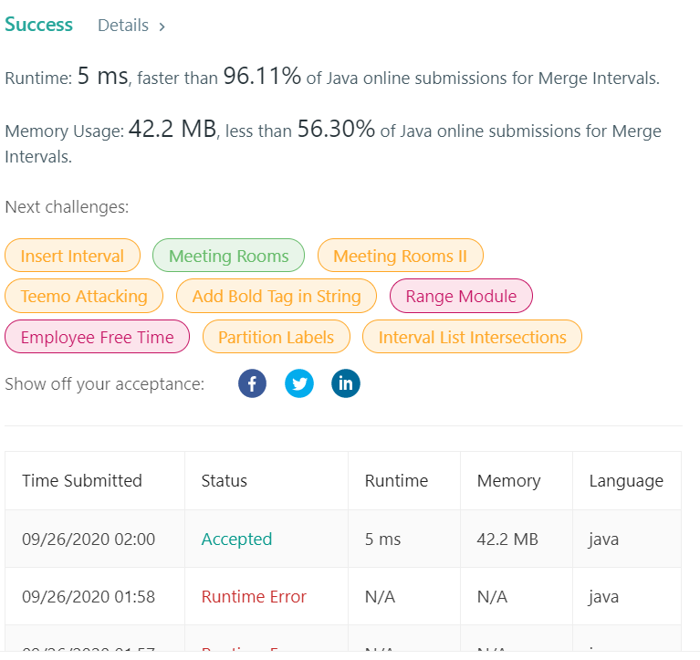

👀 문제
https://leetcode.com/problems/merge-intervals/
👊 도전
1. 설계
- boolean DP를 이용한다.
- 방문한 곳(true)에서만 이동할 수 있는 범위를 체크한다.
2. 구현
1
2
3
4
5
6
7
8
9
10
11
12
13
14
15
16
17
18
19
20
21
22
23
24
25
26
27
28
29
30
31
32
33
34
35
36
37
38
39
40
41
42
43
44
45
46
47
/**
*
* @author HEESOO
*
*/
class Solution {
public int[][] merge(int[][] intervals) {
if(intervals.length==0) return new int[][]{};
// 배열 i기준 오름차순 정렬
Arrays.sort(intervals, new Comparator<int[]>(){
@Override
public int compare(int[] i1, int[] i2){
if(i1[0]<i2[0]) return -1;
else if(i1[0]==i2[0]) return 0;
else return 1;
}
});
ArrayList<int[]> list=new ArrayList<>();
int start=intervals[0][0], end=intervals[0][1];
for(int i=1;i<intervals.length;i++){
if(start<=intervals[i][0] && intervals[i][0]<=end){ // 앞 배열과 구간이 겹친다면 두 개를 포함하는 더 큰 구간으로 변경
start=Math.min(start, intervals[i][0]);
end=Math.max(end, intervals[i][1]);
}
else{ // 아니라면, 지금까지의 구간 list에 저장 후 start, end 갱신
list.add(new int[]{start, end});
start=intervals[i][0];
end=intervals[i][1];
}
}
// 마지막에 체크한 구간은 for문에서 삽입 안되므로 따로 추가
list.add(new int[]{start, end});
// ArrayList를 int[][]로 변환
int[][] answer=new int[list.size()][];
for(int i=0;i<list.size();i++){
answer[i]=list.get(i);
}
return answer;
}
}
3. 결과

🤟 성공 🤟
compare()에 -1, 1인 경우로만 나누었더니 비교 기준이 모호하다고 오류났다. 그래서 같을 때인 0도 추가했다.
4. 설명
- intervals를 오름차순 정렬한다
- intervals는 이차원배열이므로 Comparator를 이용하여 compare()를 재정의해야한다.
- 0번째 인덱스를 기준으로 오름차순 정렬한다. 1번째 인덱스는 0번째와 같거나 크기 때문에 굳이 1번째도 오름차순으로 정렬하지 않아도 된다.
- 중복되는 구간을 찾는다
- start는 구간의 시작 지점, end는 끝나는 지점을 저장한다.
- 0번째 인덱스는 시작 지점으로, 이 곳이 다른 배열의 구간에 들어간다면 두 배열은 중복되는 구간을 가지고 있는 것이다. 1번째 인덱스는 확인할 필요가 없다.
- 구간이 중복된다면, intervals[i][0]이 start와 end 사이에 들어간다는 뜻이다.
- 이 경우 start는 둘 중 더 작은 값, end는 둘 중 더 큰 값을 저장하여 두 구간을 모두 포함하도록 한다.
- 포함되지 않는다면, 현재까지의 구간(start, end)를 list에 저장한다. 그리고 새 값으로 start와 end를 갱신한다.
- 마지막 구간은 for문에서 삽입되지 않는다. 따라서 for문을 나온 후에 따로 list에 추가해야 한다.
- int[][]형으로 변환 후 리턴한다
- 메소드의 리턴 형이 이차원배열이기 때문에, ArrayList에 저장한 값을 다시 형변환한 후 리턴한다.